图形的拼接与分割是两个相反的过程，图形拼接是将几个图形组合成一个图形，或者在一个图形上添加另外一个图形，使之成为一个完整的图形。对于图形的拼接，孩子除了需要空间想象力之外，还要有非常细致的观察力，能够找出图形的特征，从而找到图形之间的关系和位置。通过图形的拼接，孩子能够增强认知空间图形的能力，以及把握图形特征的能力，从而提高观察能力。
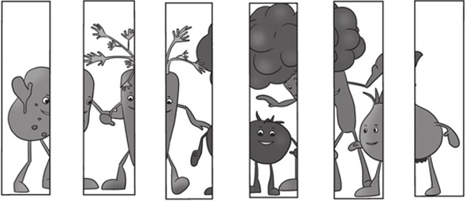
典型例题 1 下面2组图形中，哪2个图形能够拼成1个长方形？
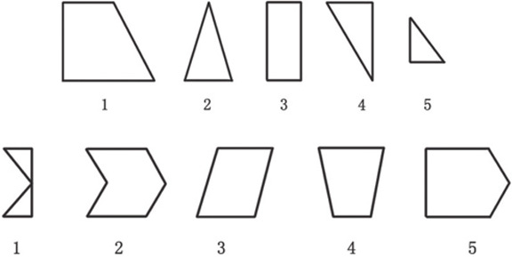
这道题实际上是考查孩子对于长方形的图形特征的掌握情况，对于基本图形特征的认知是5～7岁的孩子需要逐步掌握的技能。
在第1组图形中，1和4能够组成长方形。
在第2组图形中，1和5能够组成长方形。
典型例题 2 图形A和B重叠后会是哪个新图形呢？
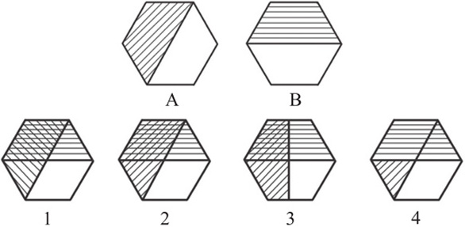
该题考查的是图形的组合，对于图形组合的题目，要注意图形的形状、填充的图案等细节，特别是有填充图案的部分。
图形A和B重叠后，组合成图形2。
典型例题 3 嘟嘟的方格子手帕被莫妮卡剪了一个洞，你知道下面哪块是莫妮卡剪下来的吗？
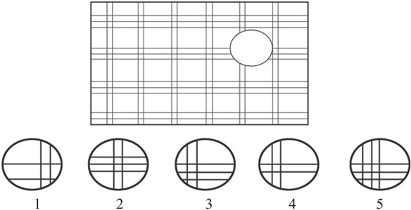
该题实际上是在大图上补上和大图吻合的小图，这就要求小图的形状、图案等要和大图上缺失的部分完全一样。
在本题中，横向的条纹是3条直线，竖向的条纹是2条直线，所以可以把选项1、选项4、选项5排除。选项2和选项3的区别在于，条纹的位置不一样，要和大图吻合，只有选项3是符合要求的。得到的原图如下所示。
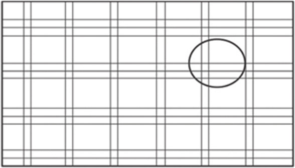
典型例题 4 下面的7幅图中有6幅可以拼成图例中的图形，多余的图是哪一幅？
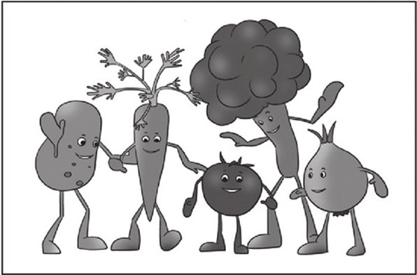
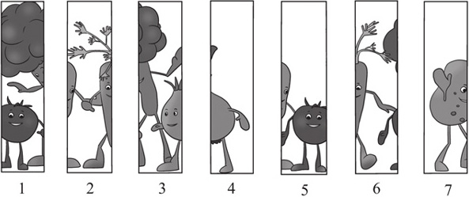
这样的题目通常有2种解题方法：第1种方法是对照原图，分别找到相应的图，这种方法相对来说，花费的时间会比较长；第2种方法是找图中有共同元素的特征图，从特征图中找出多余的图，这种方法花费的时间比较短，容易找到突破口。通常用来混淆的图与正确的图使用共同的元素。在本题中，图1和图5中都有西红柿这个共同的元素，所以其中一定有1幅图是多余的。将这2幅图分别与相邻图进行匹配，发现图5没有办法和其他图匹配，所以图5是多余的。
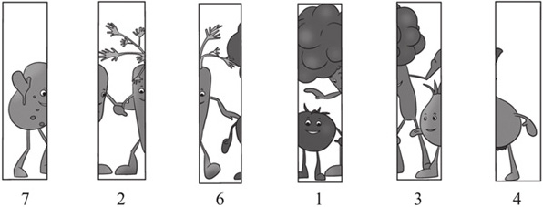
1.下面2组图形中，哪2个图形能够拼成1个长方形？
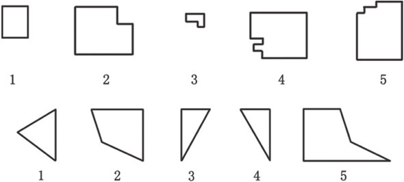
2.图形A和B重叠后会是哪个新图形呢？
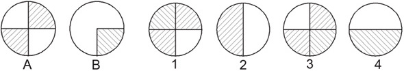
3.图形A、B分别是由1～6的哪2个图形重叠后形成的？
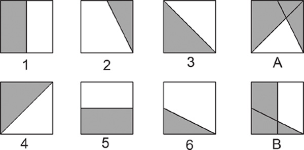
4.一张手帕被剪去了一部分，下面的右图中的哪一块补上去能正好和现在的手帕连起来呢？
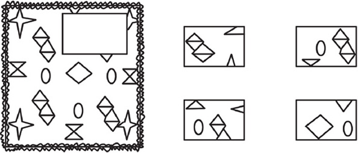
5.妈妈从一块布料上剪下了一块圆形的小布头，准备给莫妮卡补衣服，你知道下面哪一块是妈妈从布料上剪下来的吗？
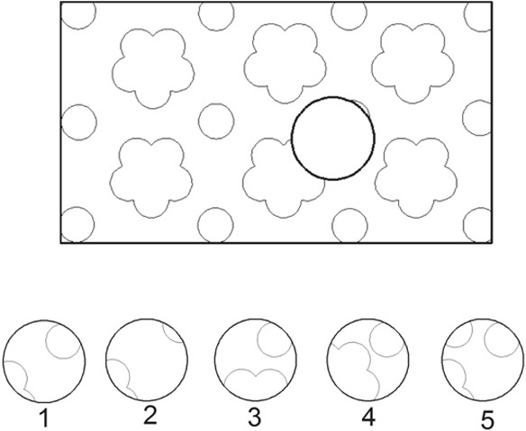
6.下面的6幅图中有5幅可以拼成图例中的图形，多余的图是哪一幅？
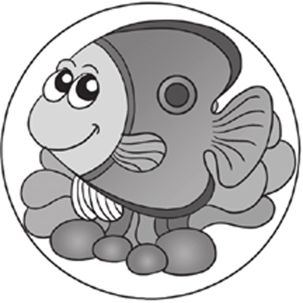
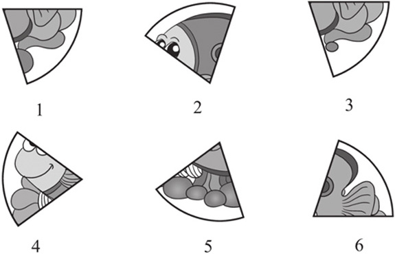
7.下面的6幅图中有5幅可以拼成图例中的图形，多余的图是哪一幅？
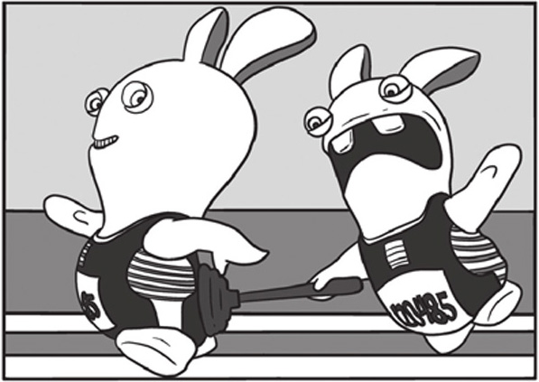
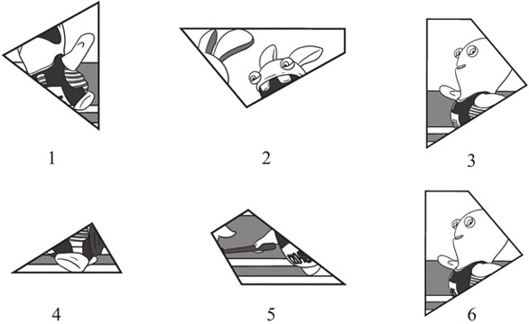
8.把下面的左图剪一刀拼成右图。
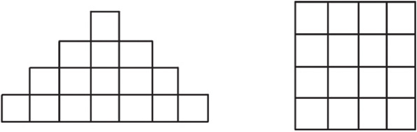